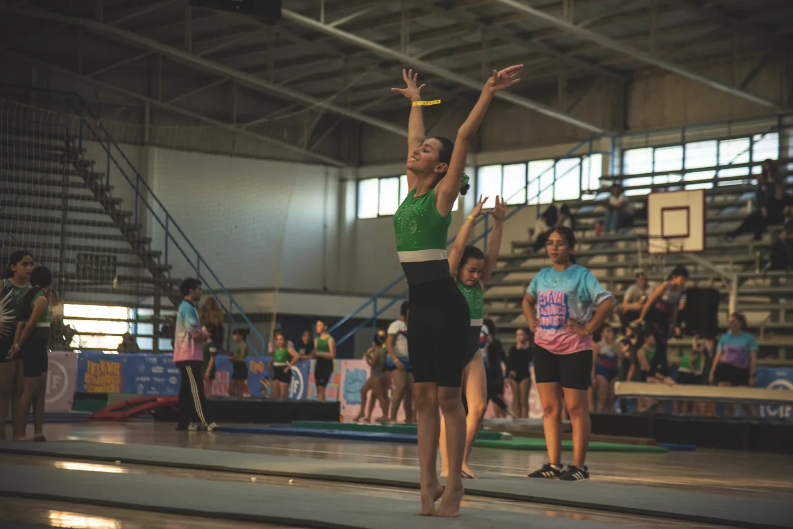

¿De qué se trata?
El Festival Patagónico de Gimnasia es un encuentro de nivel escuela organizado por el Club CIF, que reúne a gimnastas, clubes, escuelas y familias de la región.
Durante la jornada, gimnastas de distintas edades y niveles participan en circuitos pensados para mostrar lo que vienen trabajando y compartir la experiencia con otros clubes y escuelas.
Además de las actividades gimnásticas, hay música, shows, juegos y diferentes propuestas para que las familias puedan acompañar y disfrutar del festival.
Buscamos generar un espacio para encontrarnos alrededor de la gimnasia.
